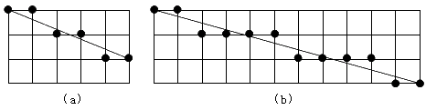
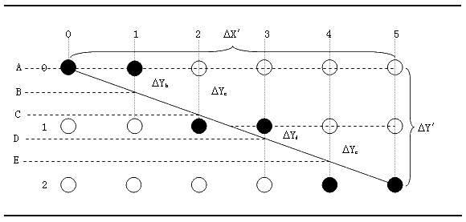

灵活地应用画点功能可以绘制出更复杂的图形。刚刚讨论的"画文字"是画点功能的一个具体地应用，我们下面的任务就是要解决如何画出任意方向直线的问题。
解析几何告诉我们坐标系中任意一条直线都可以用方程"y=kx+b"表示，其中k是这条直线的斜率，b是这条直线在y轴上的截距。我们只要根据这个公式编制程序就能在屏幕上画出直线来。请看下面这个程序：
code segment
assume cs:code,ds:code
org 100h
start: jmp go_on ；跳过数据区
k db 0,0 ；保存斜率
x0 db 0 ；起始点的X坐标
y0 db 0 ；起始点的Y坐标
x1 db 200 ；终止点的X坐标
y1 db 200 ；终止点的Y坐标
go_on: mov al,y1 ；计算Y1-Y0
sub al,y0
mov k,al ；将Y1-Y0保存至K
mov al,x1 ；计算X1-X0
sub al,x0
mov k+1,al ；将X1-X0保存至K+1
mov ax,0004h ；设置图形显示模式4
int 10h
pixel:
mov cl,x0 ；将起始点的（X0，Y0）送至CX-DX
mov dl,y0
mov ch,0
mov dh,0
mov al,1 ；选择青色
mov ah,0ch ；在CX-DX指定的位置画一个点
int 10h
inc x0 ；X坐标加1，得下一个点的X坐标
mov al,x0 ；将新的X坐标送入AL寄存器
cmp al,x1 ；已经画到最后一个点了吗？
ja end_line ；已经画到最后一个点，转END_LINE
mul byte ptr k ；计算(K x X)
div byte ptr k+1
mov y0,al ；将算出的Y坐标存入Y0
jmp pixel ；转PIXEL继续画点
end_line:
mov ah,0 ；等待键盘输入
int 16h
mov ax,0003h ；设置字符显示模式3
int 10h
mov ah,4ch ；结束进程
int 21h
code ends
end start
此程序并未直接给出直线的斜率K，而是给出直线起始点与终止点的坐标，通过两个点的坐标计算出K。这好象有些繁琐，程序的指令增多，计算量也大了，这样设计程序不是自找麻烦吗？
大家平时一想起直线首先想到公式"y=Kx+b"，然而真正在纸上画直线时几乎没有人考虑什么斜率、截距之类的东西。谁都愿意在知道起止点的情况下画线，直尺一连即可，这是最省事的。
任何一个成功的图形制作软件在画直线时都不会要求用户输入斜率、截距这样的参数，都是要求用户输入起止点坐标，或者让用户用鼠标器直接定起止点，而对于用户来说这种画线方式也是最直观，最方便的。这也就是说，把程序设计成这样一种形式其实是为程序的用户着想，虽然这个程序不可能有什么用户。
上面这个程序可以画出从点（0，0）至（199，199）这样一条对角线来，看上去效果还能让人接受。然而如果将程序中Y1的值改成1的话那么这个程序可就有问题了。
当然这个程序仍然可以运行并能画出线来，但是这条线的效果可就不能让人接受了。仔细观察这条线可以看到，组成线条的前199个点都位于屏幕第一行，只有最后一个点位于下面一行。这又是为什么呢？
问题的关键在于电脑显示器的分辨率是有限的，计算机只能在"整数"坐标位置显示点，不可能在两个扫描行之间显示出点来。所以当程序计算出某个点的Y坐标为199/200时，计算机也只能将此点画在第一行或下一行，具体要画在哪一行和程序取整的方法有关。
如果程序对所有计算出来的Y坐标都直接取整的话，那么理论上位于（199，199/200）处的点就会被画在屏幕上的第一行，因为199/200直接取整为0。上面给出的程序其实就是直接将计算结果取整，结果造成了画"拐棍儿"的效果。
这样的问题可以通过改进程序加以解决，就上面这个程序而言，只要在计算Y坐标时采用四舍五入的方法取整就能很好地解决这个问题。然而这样做并不是最理想的改进方法，因为这个程序还有其它一些缺点：比如我们将程序中的续止点X、Y坐标交换一下，即由（200，1）变成（1，200），那么这个程序就会产生十分尴尬的结果：整条线变成了两个点。看来"弱智"也是这个程序的一个缺陷。它至少应该能对（Y1-Y0）和（X1-X0）这两个差值做些比较，如果（Y1-Y0） （X1-X0）那么程序应该以（Y1-Y0）作为循环计数，而采用公式X=Y/K计算X坐标。
列举了以上一些不足之处，意在说明采用公式"Y=Kx+b"来画直线并不适用于计算机。其实上述这些缺点都是次要因素，最主要的一个缺点就是这种算法要使用乘法和除法运算。乘除法运算要消耗大量的时间，所以说这种算法是极低效的，这是这种算法的致命的缺陷。因此我们必须设计出既有效率又有效果的画线算法。
当我们给出一条直线的两个端点后，比如起点为（0，0），终点为（5，2），屏幕上应该显示出什么样的图形才能给人感觉是一条直线呢？毫无疑问，屏幕上应该显示出如图8-4（a）所示的几个点，即每画两个点之后Y坐标值要加1。如果起点仍为（0，0），终点为（11，3），那么屏幕显示出的图形就应该如图8-4（b）所示的样子了。不难看出如果我们所设计的程序能够在画第3、5点（对于图8-4b来说是画第3、7、11点）时自动将Y坐标值加上1，那么就能产生另人满意的效果来。看来要解决的一个关键问题就是要判断在什么样的情况下所画点的Y坐标值需要加1。

图9-5给出了一种算法，可以看到程序只要能够判断某个点的ΔY值是否大于1/2就可以决定是否将这个点的Y坐标值加1。具体来说，当ΔY>1/2时，所画点的Y坐标值就要加1，而当ΔY≤1/2时所画点的Y坐标值保持不变。这里就出现了两个问题：第一，各个点的ΔY值应如何计算？第二，怎样将ΔY与1/2相比较？
第一个问题比较好解决，从图中我们可以看到，直线的起点A（0，0）的ΔYa=0，第二个点B的ΔYb=0+K，第三个点C的ΔYc=0+K+K，第四个点D的ΔYd=0+K+K+K-1，第五个点E的ΔYe=0+K+K+K+K-1，以此类推，其中的K就是这条直线的斜率，K=ΔY'/ΔX'=(Y1-Y0)/(X1-X0)。可以看出计算ΔY的过程都包括一个"斜率累加"的过程，只是在Y坐标值加1之后要从累加值中减去1。如果我们把K=ΔY'/ΔX'代入公式，则有ΔYa=0，ΔYb=ΔY'/ΔX'，ΔYc=（ΔY'+ΔY'）/ΔX'，ΔYd=（ΔY'+ΔY'+ΔY'-ΔX'）/ΔX'，"斜率累加"就变成"ΔY'累加"了。
由ΔY的计算式我们还可以看出每个点的ΔY都是分数，那么如何判断一个分数是否大于1/2呢？很明显若一个分数满足"(分子x2)>分母"，则这个分数就大于1/2。对于图中的B点而言，如果2ΔY'>ΔX'，就说明其ΔY大于1/2。对于C点，如果2ΔY'+2ΔY'>ΔX'，则其ΔY大于1/2。而D 点就更麻烦一些，当2ΔY'+ΔY'+2ΔY'-2ΔX'>ΔX'时其ΔY值是大于1/2的。从这样一个判断的过程中我们能近一步发现在计算ΔY时真正需要累加的既不是"K"，也不是"ΔY'"，而是"2ΔY'"。

对于图中这条直线，线上各点有如表9-2这样的计算结果：
表9-2 决定最近点的计算实例 ΔY'=2，ΔX'=5，2ΔY'=4，2ΔX'=10
| 点 | 2ΔY'的累加值 | 累加值与ΔX'比较 | 实际点的坐标值 | 累加值调整 |
| A | 0 | (0,0) | ||
| B | 0+4=4 | 4<5 | (1,0) | |
| C | 4+4=8 | 8>5 | (2,1) | 8-10=-2 |
| D | -2+4=2 | 2<5 | (3,1) | |
| E | 2+4=6 | 6>5 | (4,2) | 6-10=-4 |
| F | -4+4=0 | 0<5 | (5,2) |
通过以上计算，我们清楚地看到当表中第三栏内出现">"时，实际所画点的Y坐标值都加上了1，同时2 Y 的累加值根据2 X 作了相应调整。而在整个过程之中X坐标值始终都是递增的。
这个画线算法是由一位名为Bresenham的程序员首创，因此这个算法被命名为Bresenham算法。因为" 2"的操作可以由左移位代替，所以在这个算法中实际上是没有乘法、除法运算的，因而这个算法十分快速，这是其最突出的优点，也是它长盛不衰的原因。
程序LOVE.ASM演示了Bresenham直线算法的一种应用，这个程序有些复杂，它将屏幕中央连续画6个封闭的多边形，由这些多边形组成一个图案。
start_x equ 100 ；起点X坐标
start_y equ 0 ；起点Y坐标
data segment
assume ds:data
dotbuff dw 26h ；第一部分总的点数
dw 48h,09h,42h,0dh,3ch,11h,37h,14h,31h,16h,29h,18h,28h,19h,2eh,1ah
dw 31h,1bh,35h,1ah,3eh,18h,45h,16h,48h,15h,4ah,19h,4ch,1dh,4ch,1eh
dw 4ah,22h,48h,25h,44h,2ah,40h,2dh,3eh,2fh,48h,2eh,4dh,2ah,50h,27h
dw 54h,22h,54h,21h,53h,1eh,51h,1ah,4fh,18h,4ah,15h,4eh,14h,53h,13h
dw 55h,11h,55h,10h,53h,0ch,4fh,09h,4bh,07h,45h,06h
dw 20h ；第二部分总的点数
dw 38h,1eh,3ah,21h,3bh,26h,3dh,2ah,3fh,2bh,40h,2bh,42h,29h,44h,26h
dw 44h,24h,42h,21h,44h,1eh,46h,1ah,42h,1fh,3fh,1ch,3dh,1bh,39h,1bh
dw 36h,1ch,33h,1fh,2fh,24h,2dh,24h,2ah,23h,26h,22h,26h,23h,29h,27h
dw 2bh,2ah,2bh,2eh,2ch,33h,34h,31h,33h,2bh,34h,24h,34h,22h,36h,20h
dw 3ch ；第三部分总的点数
dw 61h,2fh,5dh,33h,5ch,33h,57h,36h,51h,38h,4bh,3bh,51h,39h,56h,3bh
dw 58h,3ah,5fh,39h,62h,3ah,64h,39h,69h,3ah,6bh,38h,6ch,36h,6ch,35h
dw 6bh,32h,69h,2fh,66h,2dh,64h,2bh,60h,2ah,5eh,2ah,5ch,2bh,5ah,2ah
dw 55h,2bh,4ch,2ch,40h,2dh,3ch,2eh,31h,2fh,2eh,30h,29h,33h,24h,35h
dw 21h,38h,20h,34h,1dh,31h,1bh,30h,1dh,35h,1ch,36h,1bh,3bh,19h,3fh
dw 17h,41h,17h,42h,18h,48h,19h,4bh,1bh,4dh,1ch,4bh,1fh,46h,20h,43h
dw 21h,3fh,23h,3ch,27h,3ah,2ch,36h,2fh,37h,31h,37h,35h,36h,3dh,34h
dw 43h,33h,4ch,31h,53h,30h,5dh,2fh
dw 2ch ；第四部分总的点数
dw 33h,49h,32h,4dh,2fh,52h,2ch,57h,29h,59h,29h,5ah,27h,5dh,23h,62h
dw 21h,65h,1fh,68h,1eh,6dh,1fh,6dh,22h,6ch,25h,6ah,29h,65h,2dh,62h
dw 31h,5dh,33h,59h,37h,53h,3ch,4ah,40h,42h,45h,41h,4eh,3eh,51h,3dh
dw 50h,39h,4ch,37h,4bh,37h,46h,38h,43h,39h,42h,36h,40h,33h,3ch,31h
dw 3bh,31h,35h,34h,3bh,37h,3ah,39h,39h,3dh,35h,3fh,31h,41h,2ah,44h
dw 26h,43h,28h,47h,2bh,4ah,2eh,4bh
dw 33h ；第五部分总的点数
dw 3fh,5fh,3ch,62h,38h,65h,35h,67h,2eh,69h,2ch,69h,24h,68h,2bh,6ah
dw 2fh,6ch,32h,6dh,34h,6dh,3ah,6ch,3fh,6bh,43h,68h,45h,65h,4dh,6ah
dw 50h,6dh,56h,71h,5ah,73h,63h,74h,68h,74h,6ch,73h,6ch,72h,6bh,6fh
dw 67h,6ch,64h,6ah,5eh,68h,5ah,67h,56h,65h,52h,63h,4fh,61h,4ah,5eh
dw 4ch,58h,4eh,53h,52h,4dh,52h,4bh,51h,48h,4fh,44h,4bh,41h,4ah,41h
dw 47h,43h,43h,46h,3eh,4ah,39h,4dh,34h,4fh,2bh,51h,26h,53h,28h,53h
dw 2bh,54h,32h,57h,3ah,5bh
dw 09h ；第六部分总的点数
dw 48h,4bh,48h,4fh,45h,54h,44h,59h,40h,57h,3fh,57h,3ah,53h,3fh,51h
dw 44h,4eh
x0 dw ? ；第一特征点X坐标
y0 dw ? ；第一特征点Y坐标
x1 dw ? ；直线起始点的X坐标
y1 dw ? ；直线起始点的Y坐标
x2 dw ? ；直线终止点的X坐标
y2 dw ? ；直线终止点的Y坐标
color db 2 ；直线的颜色
deltax dw ? ；保存ΔX′
deltay dw ? ；保存ΔY′
delta1 dw ? ；保存2ΔX′（也可能是2ΔY′，依递增方向定）
delta2 dw ? ；保存2ΔY′（也可以是2ΔX′）
data ends
code segment
assume cs:code
main proc far
mov ax,data ；初始化DS寄存器
mov ds,ax
mov ax,0004h ；设置图形显示模式4
int 10h
mov si,offset dotbuff ；SI寄存器指向多边形的顶点表
mov cx,6 ；显示6个封闭的多边形
drloop: ；显示循环开始
push cx ；暂存CX寄存器中的计数值
lodsw ；取得一个多边形的顶点总数并保存至堆栈
push ax
lodsw ；取多边形的第一点X坐标
add ax,start_x ；起点要显示在合适的位置
mov x0,ax ；第一点的X坐标送入X0及X1
mov x1,ax
lodsw ；取多边形的第一点Y坐标
add ax,start_y ；调整位置
mov y0,ax ；第一点的Y坐标送入Y0及Y1
mov y1,ax
pop cx ；取每个多边形包含的顶点总数
dec cx ；减去起始点
drloop1:
push cx
lodsw ；取下一点X坐标
add ax,start_x ；调整位置
mov x2,ax ；将下一点的X坐标存入X2
lodsw ；取下一点Y坐标
add ax,start_y ；调整位置
mov y2,ax ；将下一点的Y坐标存入Y2
mov color,2 ；选择洋红色
call line ；从（X1，Y1）画一直线到（X2，Y2）
mov ax,x2 ；将X2移至X1
mov x1,ax
mov ax,y2 ；将Y2移至Y1
mov y1,ax
pop cx
loop drloop1 ；转DRLOOP1继续画直线
mov ax,x0 ；将第一点的X坐标送入X2
mov x2,ax
mov ax,y0 ；将第一点的Y坐标送入Y2
mov y2,ax
call line ；画至第一点，形成封闭图形
mov ah,0 ；等待键盘输入
int 16h
pop cx
loop drloop ；画下一个多边形
exit:
mov ax,03h ；设置字符显示模式3
int 10h
mov ah,4ch ；结束进程
int 21h
main endp
line proc near ；画直线的子过程
push ax ；保存寄存器
push bx
push cx
push dx
push si
push di
mov si,1 ；初设X、Y方向上的步进增量为+1
mov di,1
mov ax,x2 ；取得终止点的X坐标
sub ax,x1 ；减去起始点的X坐标
jge cont1 ；若终止点在起始点右边，转CONT1
neg si ；否则X方向上步进增量改为-1
neg ax ；获得X方向上的总点数（ΔX′）
cont1:
mov deltax,ax ；保存ΔX′
mov ax,y2 ；取得终止点的Y坐标
sub ax,y1 ；减去起始点的Y坐标
jge cont2 ；若终止点在起始点下方，转CONT2
neg di ；否则Y方向上的步进增量改为-1
neg ax ；获得Y方向上的总点数（ΔY′）
cont2:
mov deltay,ax ；保存ΔY′
cmp ax,deltax ；将ΔY′与ΔX′进行比较
jl directx ；若ΔY′< ΔX′，则将X方向作为递增方向
mov bp,0 ；若Y方向为递增方向，则准备调整X坐标
mov dx,si ；X方向上的增量值送入DX寄存器备份
mov si,0 ；X方向的增量值清0
mov ax,deltax ；ΔX′送入AX寄存器
mov bx,deltay ；ΔY′送入BX寄存器
jmp cont3 ；转CONT3继续
directx:
mov bp,2 ；若X方向为递增方向，则准备调整Y坐标
mov dx,di ；Y方向的增量值送入DX寄存器备份
mov di,0 ；Y方向的增量值清0
mov bx,deltax ；ΔX′送入BX寄存器
cont3: ；注：以下的说明将假定X方向为递增方向
mov cx,bx ；暂存BX寄存器中的ΔX′值
shl ax,1 ；计算2ΔY′
mov delta1,ax ；将2ΔY′保存至DELTA1
shl bx,1 ；计算2ΔX′
mov delta2,bx ；将2ΔX′保存至DELTA2
mov bx,cx ；将ΔX′送回BX寄存器
lineloop:
call point ；在（X1，Y1）处画一个点
add x1,si ；X坐标加一个增量值
add y1,di ；Y坐标加0
cmp ax,bx ；将AX中的2ΔY′累加值与BX中的ΔX′比较
jg adjust ；若2ΔY′大于ΔX′则转ADJUST进行调整
jmp next ；否则转NEXT继续
adjust:
add [x1+bp],dx ；将Y1坐标加上一个增量值
sub ax,delta2 ；同时AX中2ΔY′的累加值减去一个2ΔX′
next:
add ax,delta1 ；继续在AX寄存器中累加2ΔY′
loop lineloop ；转LINELOOP继续画点
pop di ；恢复各寄存器初值
pop si
pop dx
pop cx
pop bx
pop ax
ret ；返回主过程
line endp
point proc near ；画点子过程
push ax ；保存寄存器
push cx
push dx
mov cx,x1 ；X坐标送入CX寄存器
mov dx,y1 ；Y坐标送入BX寄存器
mov al,color ；颜色值送入AL寄存器
mov ah,0ch ；调用10H中断的0CH功能画一个点
int 10h
pop dx ；恢复寄存器
pop cx
pop ax
ret ；返回LINE子过程
point endp
code ends
end main
这个程序很长，数据量很大，一旦录入出了错很不好查找。不过只要大家有耐心，最终还是会被这个程序的输出所吸引的。